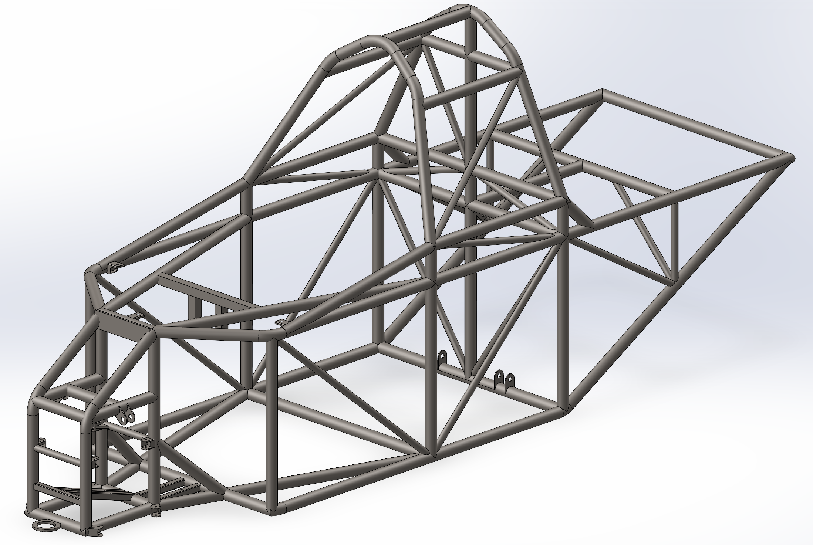

Chassis
Foundational structure providing primary framework for all mechanical systems

Me inside the chassis!

SolidWorks weldment CAD model used in all of our solar car assemblies

Ansys solution simulating a frontal impact on the chassis

Custom fixtures out of modular laser-cut steel, CNC routed MDF, and 3D printed parts

Welding fixtures on our welding table keeping our tubes located
Overview
Inheriting this chassis design from a previous mechanical lead, it was up to me to put the finishing touches on it and begin the process of fabricating it. The chassis is made out of 4130 chromoly steel tubing, all hand-cut and coped with shop tools and TIG welded together by the mechanical team. This system took the most elbow grease out of any of the others, and I couldn't have gotten to the end result by myself. The making of this system was a real team effort which was our first real opportunity to showcase our ability to make a CAD weldment assembly a reality by consulting relevant mentors, designing and fabricating fixtures, and using shop fabrication tools.
Process
- Created a 3D sketch weldment in SolidWorks to generate tube structure
- Measured chassis dimensions to ensure compliance with American Solar Challenge regulations
- Validated design in various loading conditions set by the competition in Ansys
- Designed and fabricated weld fixtures to fix and locate steel tubes in the welding table
- Cut and coped steel tubes to fit in fixture akin to CAD
- TIG'd it Up!
Tools
Skills
Outcomes and Results
Because this was the first mechanical system of the car to be made, creating it was not without its challenges. I, alongside many other members of the mechanical team had even not picked up or looked at an angle grinder or or a welding torch before. In addition to this, because of our low budget and our desire to learn, our decision to hand cut and cope the steel tubing ended up being a large investment of time. To get the chassis done within a reasonable time frame, the team and I worked tirelessly for months to assemble and weld the frame. After many long weekends and nights in the shop, the chassis was finally complete, just in time to display it at Electrify Expo 2024. One of the most notable challenges was figuring out how to accurately and predictably bend our roll cage tubes. Thankfully, we had external connections with extensive experience in bending tube for these applications and we learned a lot from them. The chassis is set to be painted in 2025, once all mounting points are finalized.
Reflection
This system gave me my first experiences using metal fabrication tools and TIG welding in a motorsport application, giving me the foundational skills I needed to design items for fabrication in the future. If I were to do it all over again, I think it would have made sense to go through with the monetary investment of getting our steel tubing laser-coped through an external source, for the valuable time savings. Even so, though the making of this system was very challenging in a physical labor aspect, I thoroughly enjoyed the work. I learned so many important concepts of making a good chassis; verifying that it is properly triangulated everywhere, ensuring there is enough clearance for suspension linkage, and planning ahead with design intent for future component mounting points. Making this system made me realize I love the challenge, and I was excited to see what other designs I could apply the knowledge and skills I gained.